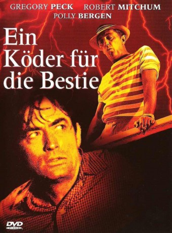

#3020 Ein Köder für die Bestie
Alternativ: Cape Fear
 
 IMDB-Wertung: 7.8 / 10
IMDB-Wertung: 7.8 / 10  Metascore: 76
Metascore: 76 
Psychothriller aus dem Jahr 1962, der auf dem gleichnamigen Roman von John D. MacDonald basiert. Der Psychopath Max Cady kommt frisch aus dem Knast und hat nur eines im Sinn: Rache an seinem Anwalt Sam Bowden, dem er seine langjährige Strafe anlastet. Cady terrorisiert die Familie des Anwalts. 1991 filmte Martin Scorsese ein erfolgreiches Remake.
Jahr: 1962
Dauer: 105 Minuten
FSK: 16
Land: USA Studio: Universal PicturesTonspuren:
Untertitel: Deutsch,
Auflösung: 1080p (1920x1040) Größe: 8130 MB
Genre: Thriller, Drama
Regisseur: J. Lee Thompson
Drehbuch: John D. MacDonald, James R. Webb
Soundtrack: Bernard Herrmann
Darsteller:
 Gregory Peck als Sam Bowden
Gregory Peck als Sam Bowden Robert Mitchum als Max Cady
Robert Mitchum als Max Cady Polly Bergen als Peggy Bowden
Polly Bergen als Peggy Bowden- Lori Martin als Nancy Bowden
 Martin Balsam als Police Chief Mark Dutton
Martin Balsam als Police Chief Mark Dutton Jack Kruschen als Attorney Dave Grafton
Jack Kruschen als Attorney Dave Grafton Telly Savalas als Private Detective Charles Sievers
Telly Savalas als Private Detective Charles Sievers- Barrie Chase als Diane Taylor
 Edward Platt als Judge
Edward Platt als Judge Will Wright als Dr. Pearsall
Will Wright als Dr. Pearsall- Joan Staley als Waitress
- Herb Armstrong als Waiter
- Paul Comi als George Garner
- John McKee als Officer Marconi
- Page Slattery als Deputy Kersek
- Ward Ramsey als Officer Brown
- Norma Yost als Ticket Clerk
- Mack Williams als Dr. Lowney
- Thomas Newman als Lt. Pete Gervasi
- Alan Reynolds als Attorney Vernon
- Bunny Rhea als Pianist
- Cindy Carol als Betty
- Alan Wells als Young Blade
- Allan Ray als Young Blade
- Paul Levitt als Police Operator
- Joseph Jenkins als Janitor , uncredited
 Kenner G. Kemp als Extra at Bar / Table Extra at Bar , uncredited
Kenner G. Kemp als Extra at Bar / Table Extra at Bar , uncredited- Marion Landers als Cross , uncredited
- Bob Noble als Pedestrian , uncredited
- Jack Richardson als Deputy , uncredited
 Jeffrey Sayre als Bar Patron , uncredited
Jeffrey Sayre als Bar Patron , uncredited Al Silvani als Man , uncredited
Al Silvani als Man , uncredited- Josephine Smith als Librarian , uncredited
- Hal Taggart als Juror , uncredited
Datei: X:\1962\Köder für die Bestie, Ein (1962, FSK16, 1920x1040).mkv seit 19.01.2016
Festplatte: HD 1900-1970
 Es gibt insgesamt 23 Filme in der Gruppe '1962'
Es gibt insgesamt 23 Filme in der Gruppe '1962'